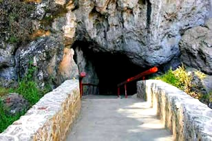
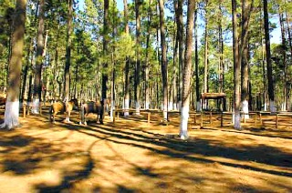
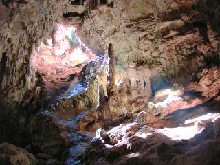
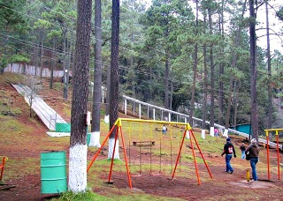
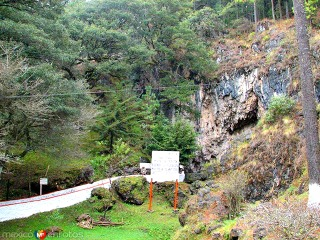

Son montañas huecas descubiertas en el año de 1947, consta de una gruta de una sola entrada y agujeros laterales con una longitud de 10.2 Km y una profundidad de hasta 150 metros, en su interior se aprecia proliferaciones de estalactitas y estalagmitas que se amplían en el fondo hasta convertirse en un salón.
Se localizan a 10 km de la ciudad tomando la carretera panamericana rumbo a comitán.
Si usted trae carro y se encuentra ubicado en la avenida crescencio rosas a la altura de la plaza de la paz puede continuar manejando dos cuadras en ese sentido hasta encontrar la calle 1 de marzo para dar vuelta a la izquierda sobre esa calle, avanza una cuadra y nuevamente da vuelta a la izquiera en la calle 5 de mayo para tomar esa calle derecho hasta salir al boulevard juan sabines gtz, que es el cual lo llevará directamente hasta las grutas.
En el lugar usted puede realizar actividades como:
* Caminatas y expediciones
* Cicloturismo
* Fotografía
* Juegos
* Observación de flora y fauna
* Paseos a caballo
* Picnic
* Cabalgatas
* Futbol
* Observar montañas
* Contemplación del paisaje
* Observación de flora
* Observacion de fauna
* Turismo de aventura
* Espeleología
* Ecoturismo
* Compra de artesanía
* Gastronomía





posicione el mouse sobre las imágenes